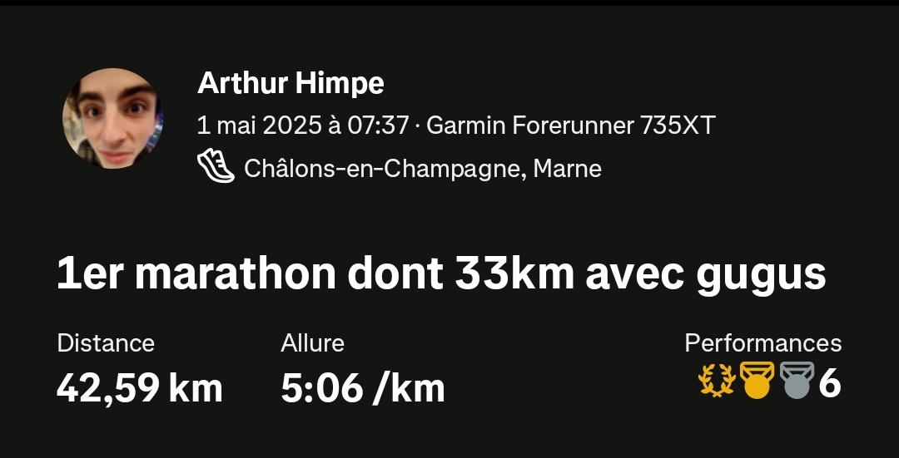
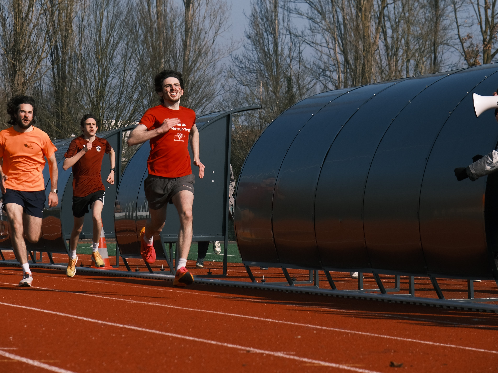

La course à pied est un sport que j'apprécie beaucoup car il est accessible, modulable et peut être pratiqué à n'importe quelle heure.
Après avoir fait 10 ans de judo et testé plusieurs sports comme le badminton, je me suis rendu compte que la course à pieds est le sport qui me convient le mieux. Il est possible de courir avec des gens ou selon l'envie, de partir pour une balade ou pour une séance fractionnée, et à chaque fois d'avoir une bouffée d'air frais.

A force de courir, j'ai fini par avoir quelques résultats. Par exemple, j'ai pu faire quelques podiums dans des courses locales, et remporter une épreuve de 800m lors d'une compétition universitaire. J'ai aussi couru quelques marathons (2 pour l'instant, mais je suis inscrit au marathon de Paris 2026).

